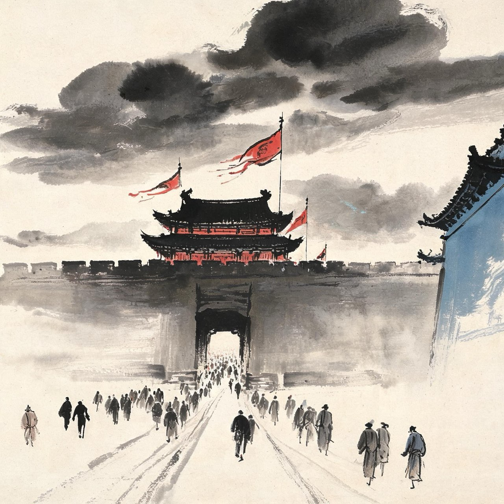
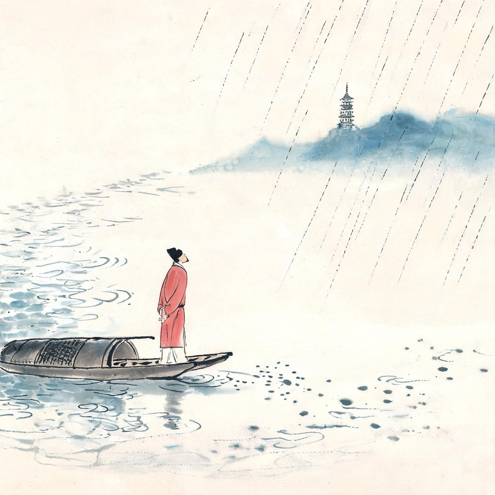
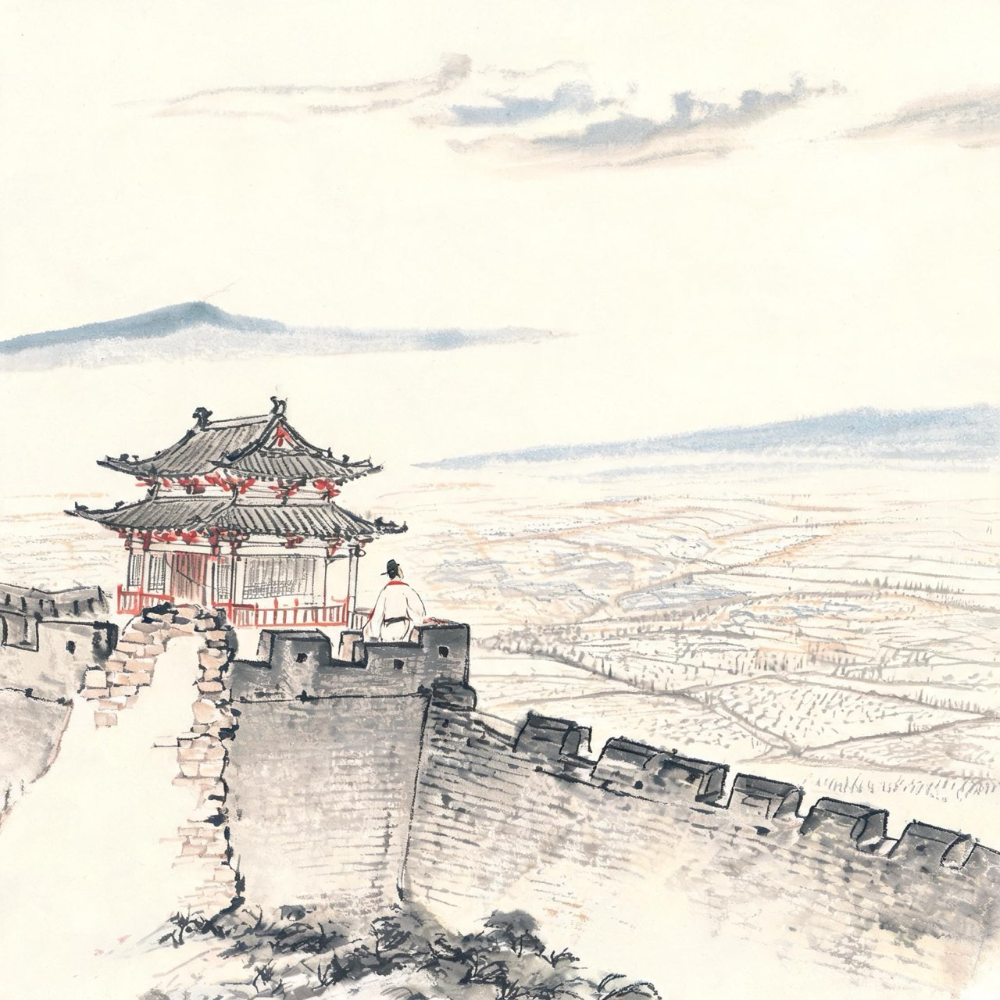
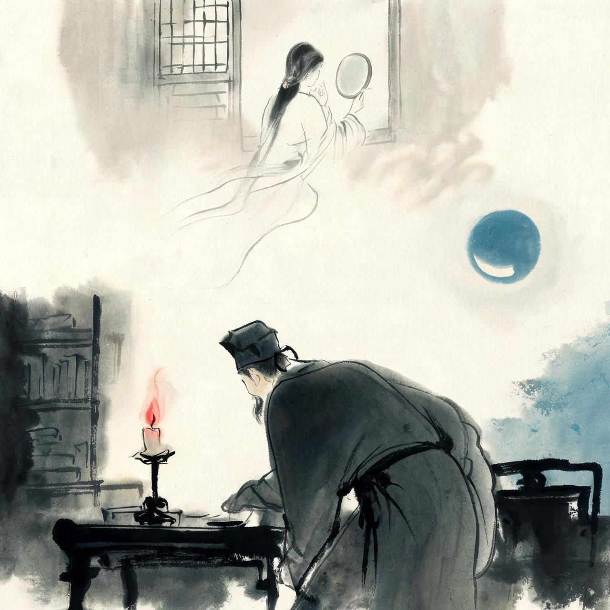
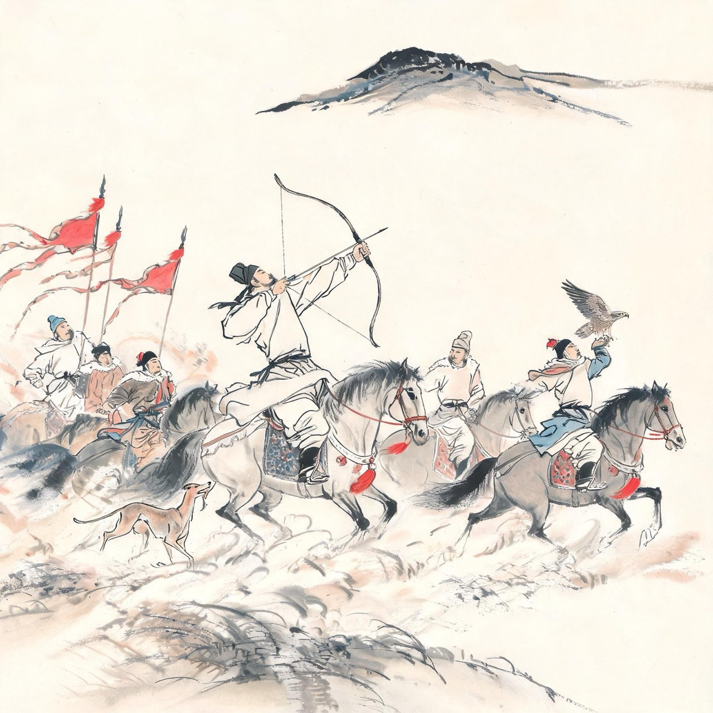
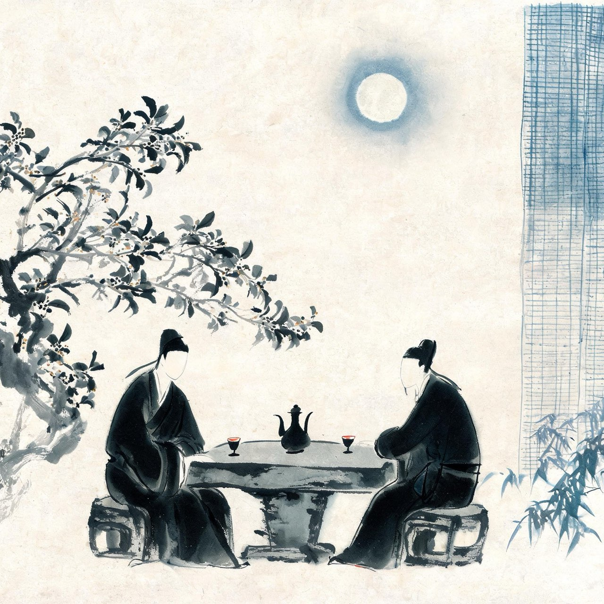
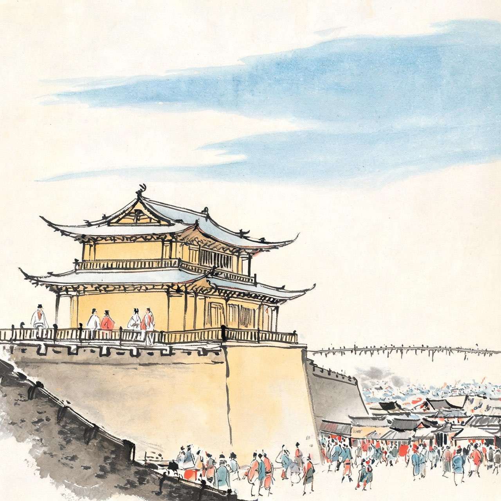
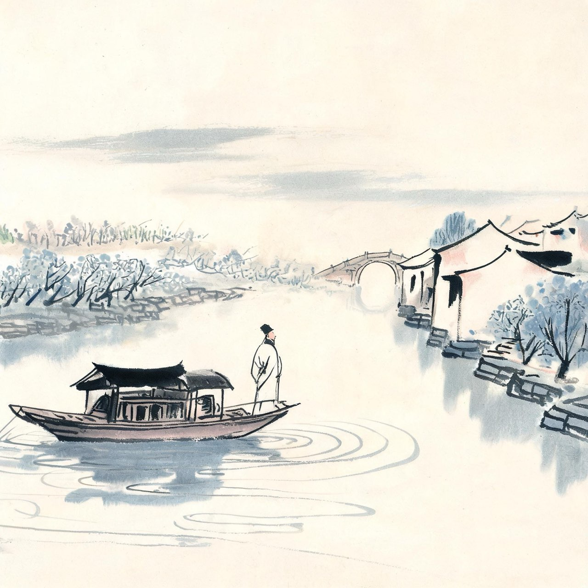

苏轼 · 1071-1079
宦游
明月几时有

新法风暴
熙宁四年，苏轼守丧期满还朝。汴京已不是他离开时的汴京。
王安石拜相，新法雷厉风行：青苗、免役、市易、保甲……朝堂上反对的人一个个被贬出京。苏轼上了万言书，直言新法之弊，无人理会；再上书，石沉大海。
三十四岁的苏轼看清了一件事：留下来，要么闭嘴，要么获罪。
他选择第三条路——自请外放。京城的天太大，他去地方上做事。朝廷批准：通判杭州。

初到杭州
熙宁四年年底，苏轼到杭州任通判。
劫后余生的杭州张开怀抱迎接他。西湖的潋滟波光，钱塘的怒潮，灵隐的钟声，还有满城的好茶好酒好诗友。
他在诗里写：未成小隐聊中隐，可得长闲胜暂闲。我本无家更安往，故乡无此好湖山。
通判是知州的副手，管不了大局，却管得了案牍与山水之间的平衡。公务之余，他把整座西湖装进了诗里。
注
- 故乡无此好湖山：出自《六月二十七日望湖楼醉书》组诗语境
饮湖上初晴后雨
水光潋滟晴方好，山色空蒙雨亦奇。
欲把西湖比西子，淡妆浓抹总相宜。
注
- 自此诗起，西湖别名西子湖，一城山水因一首诗改名

谪向密州
熙宁七年，苏轼杭州任期届满。他申请调往山东——去密州，为了离在济南任职的弟弟苏辙近一点。
密州不是杭州。这里是北方的穷邦，蝗旱相接，连衙门都是破的。苏轼在《超然台记》里回忆：余既乐其风俗之淳，而其吏民亦安予之拙也。
生活清苦，公务繁重。他把废弃的北城楼修了修，取名超然台——无往而不乐者，盖游于物之外也。
在这座超然台上，他将迎来平生最伟大的两个夜晚。

正月二十日夜记梦
熙宁八年正月二十日夜，密州。苏轼梦见了自己已经死去十年的结发妻子王弗。
梦里她还在，坐在小轩窗前梳妆。十年了——他在尘世里奔忙，满面风霜；她在千里之外的孤坟里，长眠不醒。梦里相逢，两个人相顾无言，只有眼泪往下淌。
醒来时，明月照着窗外。他想起草志铭里写过的短松冈——亲手种下的三万株松苗，如今该有多高了。
他没有说话，只是提笔，写下一阕词。
江城子·乙卯正月二十日夜记梦
十年生死两茫茫，不思量，自难忘。
千里孤坟，无处话凄凉。
纵使相逢应不识，尘满面，鬓如霜。
夜来幽梦忽还乡，小轩窗，正梳妆。
相顾无言，惟有泪千行。
料得年年肠断处，明月夜，短松冈。
注
- 悼亡词开山之作；短松冈呼应墓志铭手植三万松

密州出猎
同年冬天，苏轼去常山祭神归来，与同僚会猎于铁沟。
亲随们左手牵猎犬，右臂架苍鹰，锦帽貂裘，千骑奔驰卷过山冈。全城百姓倾城而出，看这位文太守纵马弯弓。
那一刻他忽然痛快。他对朋友说：数日前猎于郊外，所获颇多。作得一阕，令东州壮士抵掌顿足而歌之，吹笛击鼓以为节，颇壮观也。
写词，原来也可以写出英雄气。
江城子·密州出猎
老夫聊发少年狂，左牵黄，右擎苍。
锦帽貂裘，千骑卷平冈。
为报倾城随太守，亲射虎，看孙郎。
酒酣胸胆尚开张，鬓微霜，又何妨！
持节云中，何日遣冯唐？
会挽雕弓如满月，西北望，射天狼。
注
- 此词被公认为豪放词的发端，苏轼自己在信中也不无得意：虽无柳七郎风味，亦自是一家
丙辰中秋
熙宁九年中秋，超然台上。
苏轼欢饮达旦，大醉。这一夜月色极好，天下人共赏一轮明月。他想起弟弟苏辙——自熙宁四年颍州一别，兄弟俩已经五年多没见了。
酒意上头，他望着一轮圆月，问了天一个问题：明月几时有？把酒问青天——这样圆满的月，人间为什么总有人分离？
大醉中，他挥笔写完了一阕词，题曰：兼怀子由。
水调歌头·明月几时有
丙辰中秋，欢饮达旦，大醉，作此篇，兼怀子由。
明月几时有？把酒问青天。
不知天上宫阙，今夕是何年。
我欲乘风归去，又恐琼楼玉宇，高处不胜寒。
起舞弄清影，何似在人间。
转朱阁，低绮户，照无眠。
不应有恨，何事长向别时圆？
人有悲欢离合，月有阴晴圆缺，此事古难全。
但愿人长久，千里共婵娟。
注
- 宋人胡仔评：中秋词自东坡《水调歌头》一出，余词尽废
- 高处不胜寒：九年后将一语成谶——庙堂之高，他终究消受不起

徐州相聚
熙宁十年，苏轼调任徐州知州。苏辙也在京师改任，兄弟俩相约同行，在徐州同住了三个多月。
这是他们成年后最长的一次团聚。中秋共赏明月，同游燕子楼，兄弟唱和的诗写了一轮又一轮。分别时苏辙有词《水调歌头·徐州中秋》：离别一何久，七度过中秋。
谁也没想到，短暂的团圆之后，等待徐州的不是诗，是滔天的洪水。
事件·徐州抗洪
七月，黄河在澶州曹村决口，洪水汇于徐州城下，水位涨到两丈八尺，高出城中平地一丈多。
富户争相出城逃命。苏轼站在城门口下令：富民出，民皆动摇，吾谁与守？——把他们全劝了回来。
他征调禁军修筑外城墙。禁军本是皇帝直属，历来不听地方官调遣。苏轼说：河将害城，事急矣，虽禁军且为我尽力。卒长说：太守犹不避涂潦，吾侪小人，当效命。
苏轼布衣草履，结庐城墙之上，过家门而不入。洪水的城墙与人的城墙并肩撑了七十余日，徐州城得以保全。

黄楼与苏门
洪水退后，苏轼奏请朝廷拨款，加固徐州城堤。第二年，在东门城楼上建起一座大楼，涂上黄土，取五行土能克水之意，命名黄楼。
落成那天，全城庆祝。苏轼登楼赋诗，弟弟和了一首，朋友秦观、苏门诸士也应声而和。
说到苏门——这些年，一批年轻才俊已渐渐聚拢在他身边：黄庭坚、秦观、晁补之、张耒，后来并称苏门四学士。苏轼待他们如友如弟，倾囊相授，不问出身。
徐州时期的苏轼，是意气风发的。他在给友人的信里说：吾侪虽老且穷，而道理贯心肝，忠义填骨髓。
这样的锋芒，朝廷很快就会来收割。
注
- 道理贯心肝，忠义填骨髓：出自《答李琮书》，文字或有出入，待校

调任湖州
元丰二年三月，苏轼调任湖州知州。
从徐州到湖州，江南水乡，鱼米之乡。他按惯例写了一道《湖州谢上表》，例行公事里夹了两句牢骚：愚不适时，难以追陪新进；察其老不生事，或能牧养小民。
新党看了刺眼：什么叫难以追陪新进？什么叫老不生事？你们旧党倒成了君子？
御史台的眼睛盯上了这道谢表。七月，乌台诗案的罗网收紧——
那，是下一章的故事。
注
- 谢表文字成为乌台诗案导火索之一